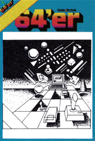

Grafik, Musik, Anwendungen

Im 64'er Sonderheft 11 geht's um Grafik, Musik und Anwendungen. Grafik-Fans kommen mit Grafik-Calc und HiRes-Master voll auf ihre Kosten. Grafik-Calc ist ein exzellentes Programm, mit dem professionelle Geschäftsgrafiken erstellt werden können.
HiRes-Master ist genau das Richtige für Geschwindigkeitsfanatiker. Speziell ausgelegt zum Zeichnen von Punkten, Linien und Kreisen werden Sie überrascht sein, wie unwahrscheinlich schnell der C 64 in bezug auf Grafik sein kann.
Musik ist ein faszinierendes Thema! In einem ausführlichen Kurs sagen wir Ihnen, was Sie zu tun haben, wie Sie zum Experten in Sachen Musik werden. Viele Beispiele und Sound-Demos zum Abtippen sind ebenfalls dabei.
Das 64'er-Sonderhelft 11 »Grafik, Musik, Anwendung« gibt's ab Ende Oktober an jedem Kiosk.